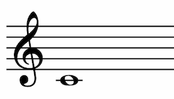

MNX 1.0 draft specification
- Editor: Adrian Holovaty (Soundslice)
- Original editor: Joe Berkovitz (Risible LLC)
MNX is a new, open standard for representing music notation as machine-readable data. The aim is to improve MusicXML in fundamental ways while retaining many of its key concepts, terms and features. A primary goal is to provide a high degree of interoperability and exchange between different applications working with music notation.
MNX is a work in progress, and it's not ready for implementation. But if you work with music notation data in any way, we'd love your input.
A gentle introduction
Conceptually, MNX is a way to represent this image...

...as something like this:
staves=1 keysignature=C major clef=treble notes=whole note at C4
The former, an image, is intended for humans. A computer can’t understand it without using advanced, error-prone computer vision techniques.
The latter — which encodes the meaning (aka semantics) of the music, as opposed to a specific collection of pixels — is much easier for a computer to understand. Treating music in this way means it can be shared among different programs, automatically manipulated and much more.
MNX is a standard that describes how to encode music, so that computers can have a shared understanding on how to interpret it. As HTML describes a web page such that any web browser can read it, MNX describes a piece of music such that any notation software can read or write it.
Motivation
People have been using computers to encode music for decades; a wide variety of encoding formats has been developed over the years. Why do we need yet another format?
Each music encoding format has its own biases and priorities. The ABC format, for example, aims for simplicity and was originally developed for folk music. MusicXML is optimized for notation interchange. MIDI focuses on low-level instrument sequencing, as opposed to higher-level musical concepts. MEI, a general-purpose framework for encoding arbitrary musical documents, pays particular attention to the needs of scholars. Proprietary formats, such as Finale’s `.musx` or Sibelius’ `.sib`, are optimized for specific notation programs and not meant to be read by others.
Our goal with MNX is to create a format that does all of the following:
- It’s open, meaning: it’s clearly documented, free to use and developed in a vendor-independent, inclusive way.
- It supports all of Common Western Musical Notation (CWMN), meaning: it has a clear answer for how to encode any musical concept found in CWMN.
- It prioritizes interchange, meaning: it can be generated unambiguously, it can be parsed unambiguously, it favors one-and-only-one way to express concepts, and multiple programs reading the same MNX file will interpret it the same way.
- It’s semantically rich, meaning: it’s biased toward encoding concepts rather than presentation when prudent.
- It can be used as a native format, meaning: it’s robust enough for programs to use directly instead of needing to invent their own format.
The existing format that comes closest to these goals is MusicXML. In fact, MNX’s creation is being led by the W3C Music Notation Community Group, which also oversees the MusicXML standard. So what’s the difference?
We see MNX as the next generation of MusicXML, enabling new uses that MusicXML didn’t set out to support.
With hundreds of applications supporting it, MusicXML has succeeded in becoming the de facto notation interchange standard. These days, you can be reasonably sure that, if you compose music in a commonly used notation application, you’ll be able to export it and open it in another application with decent fidelity — thanks to MusicXML. This has been a major cultural step forward, considering major notation programs hadn’t always looked kindly on making music exportable into competitors’ products.
As the dream of universal interchange has become a reality, users and developers have come to demand even more. Users want richer interchange (i.e., preserving the details of music more crisply), the advent of “reflowing” web-based renderers has shifted expectations around music engraving, and some developers even use MusicXML as a native format (something it wasn’t designed to do).
MNX is an effort to take everything we’ve learned from 15 years of MusicXML development — along with its diverse community of developers, musicians and publishers — and build a better future together.
Finally, we should note there are many music notation systems throughout the world’s cultures, along with historical notation systems. MNX deals specifically with Common Western Musical Notation, as it’s a high priority for the current MusicXML community and it’s where our collective expertise is the strongest — but our long-term plan is to support other systems. We envision adding other formats to the MNX family, though we’re not sure what they’ll be or how they’ll be named.
Getting started
Curious about what we have so far? The best way to dive in is to read Comparing MNX and MusicXML. Even if you're not familiar with MusicXML, the document has many examples of sheet music with the corresponding MNX code.
Want to contribute to our work? MNX is being designed in an open process that you're encouraged to join. Here's how:
- Our issue tracker serves as a to-do list and is the main place we discuss ideas.
- Our commit history shows you what progress we've made lately.
- Our GitHub repository stores this specification, along with the tools we use to create it and other assorted documents.
- The Music Notation Community Group blog publishes regular status updates.
Copyright © 2021 the Contributors to the MNX Specification, published by the Music Notation Community Group under the W3C Community Contributor License Agreement (CLA). A human-readable summary is available.